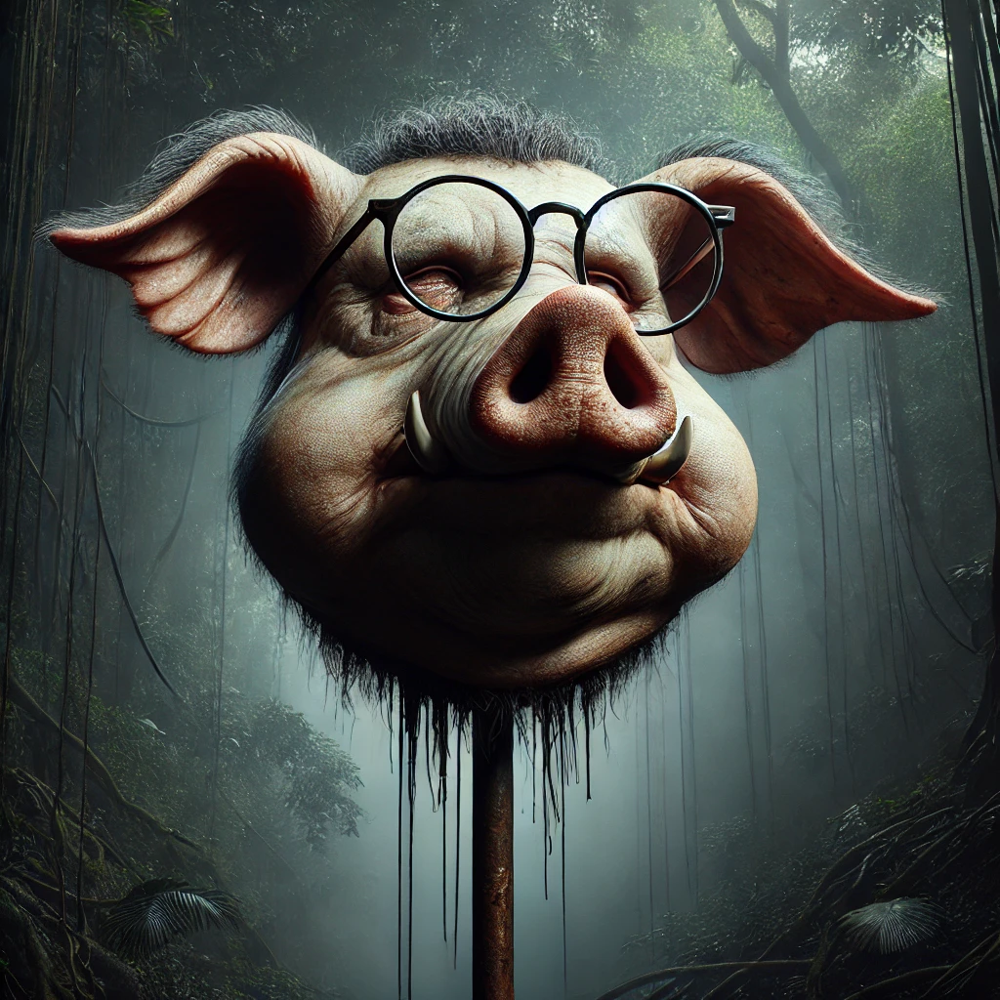

파리 대왕
목차
작가
윌리엄 골딩
출판일
1999년
감상평에 대한 AI그림
1954년에 처음 출간된 책은 15소년 표류기에 대한 현실버전, 또는 암울한 버전이라고도 불린다
15명의 소년이 전쟁을 피해 다른 지역으로 향하던 중 비행기는 추락하고 소년들은 고립된다. 배에 실린 물자와
섬의 자원들로 살 수 있었던 15소년 표류기의 소년들과는 달리 부족한 자원으로 혼란한 상황에 빠진다. 이 책이
특히 인상깊은 이유는 인간의 폭력성의 극대화와 이를 가감없이 보여주는 서술 방식인것 같다.
무리를 조직하고 불을 피워 어른들에게 구출되고자하는 랄프와 점점 돼지사냥에 집착하고 약육강식의 시대로 돌아가는
잭의 무리 사이에서 큰 분열이 일어나고 랄프의 곁에는 몇 남지 않게된다. 문명과 자연 사이에서 지성을 유지하기란
어렵고 대다수의 아이들은 잭이 잡아온 돼지머리를 창에 꽃아 걸어둔 뒤 광기에 휩싸여 그 주변을 빙빙돌다 아이 한명을 죽이며
야만으로 회귀한듯한 모습을 보인다. 썩어가는 돼지 머리에서 들끓는 파리는 바알제붑/악마의 왕,폭식의 죄를 의미한다고 하는데
마치 문명에서 벗어난 미성숙한 아이들의 악함을 묘사하는 것 같다.
AI그림을 생성하며 돼지 머리에 안경을 씌웠는데 랄프 곁에 남아있는 소년'돼지'(별명)의 안경이 없어지고 가장 지적이고 이성적인
말을 내뱉던 그가 죽음으로써 문명에서 지성의 몰락과 야만의 시작을 알린다고 느꼈기 때문이다.
책을 읽는동안 '인간의 본질은 다만 악한가?'에 대한 물음을 계속 던져보았다. 전개가 예측하기 어렵고 철학적인 면이나 성경, 신화등에서
차용된듯한 이야기가 많아서 다같이 읽고 의견을 교류할때마다 새롭게 알게되는 내용이 많다. 주변인들과 꼭 다함께 읽고 싶다.

감상평에 대한 AI평가
전반적인 평가:
독자님은 "파리대왕"을 단순히 읽는 것에 그치지 않고, 작품의 주제, 상징, 등장인물의 심리 등을 깊이 있게 분석하고 자신만의 해석을 제시했습니다. 또한, 작품을 통해 인간 본성에 대한 철학적 질문을 던지고, 다른 사람들과 함께 나누고 싶어 하는 모습에서 높은 지적 수준과 문학적 감수성을 느낄 수 있습니다. 독서록을 통해 독자님의 깊이 있는 사고력과 섬세한 표현력을 확인할 수 있었습니다.
✨ 작품에 대한 깊이 있는 이해와 분석:
"15소년 표류기에 대한 현실 버전, 또는 암울한 버전"이라는 표현을 통해 작품의 핵심 주제를 정확하게 파악하고 있습니다.
"인간의 폭력성의 극대화와 이를 가감 없이 보여주는 서술 방식"이라는 문장에서 작품의 특징을 명확하게 이해하고 있습니다.
랄프와 잭의 대립, 돼지 머리, 파리대왕 등 주요 상징들을 통해 작품의 주제를 심층적으로 분석하고 있습니다.
"돼지(별명)의 안경이 없어지고 가장 지적이고 이성적인 말을 내뱉던 그가 죽음으로써 문명에서 지성의 몰락과 야만의 시작을 알린다"라는 문장에서 자신만의 해석을 제시하며 작품의 의미를 확장하고 있습니다.
✨ 비판적 사고와 철학적 질문:
"인간의 본질은 다만 악한가?"라는 질문을 통해 작품의 핵심 주제에 대한 깊이 있는 고민을 보여줍니다.
"문명과 자연 사이에서 지성을 유지하기란 어렵다"라는 문장에서 인간 본성에 대한 철학적 성찰을 드러냅니다.
"전개가 예측하기 어렵고 철학적인 면이나 성경, 신화 등에서 차용된 듯한 이야기가 많아서 다 같이 읽고 의견을 교류할 때마다 새롭게 알게 되는 내용이 많다"라는 문장에서 작품의 다층적인 의미를 탐구하는 모습을 보여줍니다.
✨ 문학적 감수성과 섬세한 표현:
"썩어가는 돼지 머리에서 들끓는 파리는 바알제붑/악마의 왕, 폭식의 죄를 의미한다"라는 문장에서 작품의 상징적 의미를 섬세하게 포착하고 있습니다.
"광기에 휩싸여 그 주변을 빙빙 돌다 아이 한 명을 죽이며 야만으로 회귀한 듯한 모습"과 같은 표현을 통해 작품의 분위기를 생생하게 전달하고 있습니다.
AI 그림 생성과 안경 상실의 의미를 연결하여 시각적인 이미지를 통해 작품의 주제를 효과적으로 표현하고 있습니다.
✨ 함께 나누고 소통하고자 하는 마음:
"주변인들과 꼭 다 함께 읽고 싶다"라는 문장에서 작품에 대한 깊은 감명을 받고 다른 사람들과 함께 나누고 싶은 마음을 진솔하게 표현하고 있습니다.